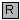

In this package types and constants are defined that are used in the MultiBody library. The types have additional annotation choices definitions that define the menus to be built up in the graphical user interface when the type is used as parameter in a declaration.
| Name | Description |
|---|---|
| Axis vector with choices for menus | |
| Label of axis with choices for menus | |
| RotationSequence | Sequence of planar frame rotations with choices for menus |
| Color | RGB representation of color (will be improved with a color editor) |
| Reflection of ambient light (= 0: light is completely absorbed) | |
| Type of shape (box, sphere, cylinder, pipecylinder, cone, pipe, beam, gearwheel, spring, dxf-file) | |
|  ShapeExtra | Reflection of ambient light (= 0: light is completely absorbed) |
| AngularVelocity_degs | Angular velocity type in deg/s |
| AngularAcceleration_degs2 | Angular acceleration type in deg/s^2 |
| Type, constants and menu choices for rotation types, as temporary solution until enumerations are available | |
| Type, constants and menu choices for gravity fields, as temporary solution until enumerations are available | |
| Type, constants and menu choices to define initialization, as temporary solution until enumerations are available | |
| Default settings of the MultiBody library via constants |
type Axis = Modelica.Icons.TypeReal[3] "Axis vector with choices for menus";
type AxisLabel = Modelica.Icons.TypeString "Label of axis with choices for menus";
type RotationSequence = Modelica.Icons.TypeInteger[3] (min={1,1,1}, max={3,3,3})
"Sequence of planar frame rotations with choices for menus";type Color = Modelica.Icons.TypeInteger[3] (each min=0, each max=255) "RGB representation of color (will be improved with a color editor)";
type SpecularCoefficient = Modelica.Icons.TypeReal "Reflection of ambient light (= 0: light is completely absorbed)";
type ShapeType = Modelica.Icons.TypeString "Type of shape (box, sphere, cylinder, pipecylinder, cone, pipe, beam, gearwheel, spring, dxf-file)";
type ShapeExtra = Modelica.Icons.TypeReal "Reflection of ambient light (= 0: light is completely absorbed)";
type AngularVelocity_degs = Modelica.Icons.TypeReal(final quantity="AngularVelocity", final unit
= "deg/s") "Angular velocity type in deg/s"; type AngularAcceleration_degs2 = Modelica.Icons.TypeReal (final quantity="AngularAcceleration",
final unit="deg/s2") "Angular acceleration type in deg/s^2";